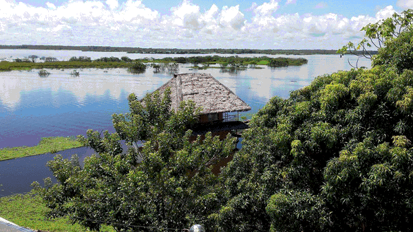
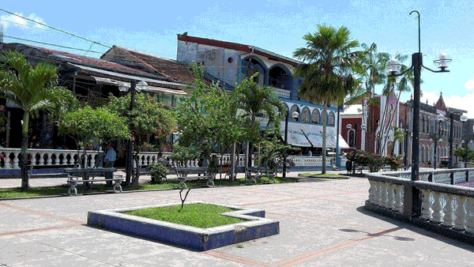
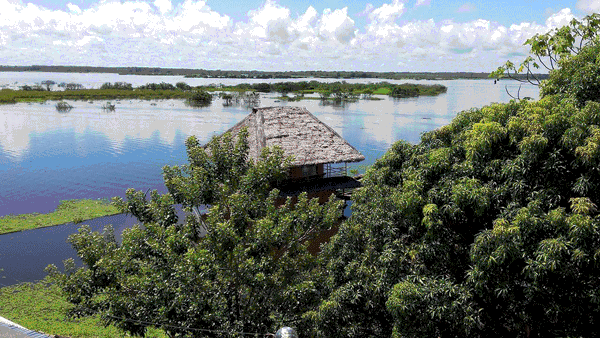
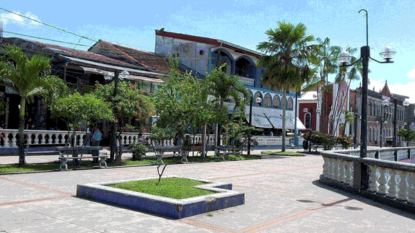

INFORMACION
Ciudad de Iquitos, es la ciudad la capital de la Provincia de MAYNAS del gran Departamento de LORETO ubicado en NOR ORIENTE DEL PERÚ. En muchos casos es considerada como la metrópolis de la gran majestuosa Amazonía Peruana.
La ciudad se encuentra ubicada Altitud: 106 msnm y esta rodeada por los ríos AMAZONAS, NANAY e ITAYA y en parte por el lago de MORONACOCHA, por el cual algunos la llaman la Isla del encanto y del Amor.
HABITANTES DISTRIBUIDOS POR DISTRITOS
- IQUITOS (168,594 hab.)
- BELÉN (80,551hab.)
- PUNCHANA (90,179 hab.)
- SAN JUAN BAUTISTA (124,143 hab.)
su clima es variado, La temporada de lluvias se suele iniciar en el mes de diciembre pudiendo y durar hasta el mes de marzo La sensación termica anual de 26° equivalente 78,8 F° (máxima de 36° y mínima de 17° C)
Es una ciudad humeda: 94% aprox. pudiendio variar en cualquier momento
Siempre tome sus precauciones, con repelentes y abrigo en casos chubascos, lluvias torrenciales.
Si ud. va por turísmo de ecológico y esta en planes de ir a un albergue a las afueras de la ciudad, se recomienda la vacuna contra la fiebre amarilla, aunque no obligatoria.
CUENTA CON DOS ACCESOS:
- Via Aerea : duración de vuelo 1:30Hrs. aproximadamente.
- Via fluvial: los que deseen hacer un arribo de aventura a través del río Ucayali y el amazonas, partiendo de la ciudad de Pucallpa, de tener presente que el viaje seria de 4 a 5 días aprox. al arribo a la ciudad
FIESTAS
Sus fiestas costumbristas son los carnavales donde la gente participa realizando la colocación de Umishas (especie de una árbol adornado con muchos regalos) comparsas, pandilladas en las calles y en algunas zonas alejadas de la ciudad llamadas tambén caserios.
En Junio tenemos la Fiesta de San Juan fecha central día 24, que tiene un carácter simbólico en toda la Amazonía.
Cabe recordar que en esás fechas hay muchas actividades en toda la ciudad asi como en el distrito de San Juan Baustista y el plato infaltable a la hora del almuerzo o cena es el delicioso JUANE que puede ser acompañado por su TACACHO CON CECINA

MOVILIDAD AEROPUERTO IQUITOS “Francisco Secada Vignetta”
Una vez Llegado al aeropuerto Iquiteño sea la hora que sea encontrará muchos motocarros (llamada mototaxi en otras provincias) o taxistas en la puerta de salida de pasajeros. Tarifas promedio para el aeropuerto según el distrito:
- Aeropuerto Distrito de San Juan:
- Motocarro: S/. 5.00 a S/6.00
- Taxi : S/ 8.00 a S/10.00
- Aeropuerto Distrito de Belén:
- Motocarro: S/. 7.00 a S/8.00
- Taxi : Entre S/ 8.00 a S/10.00
- Aeropuerto Distrito de Iquitos (cercado)
- Motocarro: S/. 8.00 a S/10.00
- Taxi : Entre S/ 15.00 a S/18.00
- Aeropuerto Distrito de Punchana:
- Motocarro: S/. 8 .00 a S/10.00
- Taxi : Entre S/ 10.00 a S/15.00
HOSPEDAJE
La mejor zona para alojarse en Iquitos es en los al rededores de la plaza de Armas, que cuenta con muchos hoteles y hostales, podría buscar por Internet algún Hotel, Hostal u hospedajes Backpackers. De seguro encontrará buenos hospedajes para todos los bolsillos, recomiendamos buscar referencias del lugar que escogió y no hacer depósitos para reservas.
Através de este site vamos a estar publicando los mejores alojamientos

 



LA MONEDA EN PERU
La Moneda oficial del Perú es el Nuevo sol
Si deseas hacer alguna transacción que implica tipo de cambio, consulta con los siguientes enlaces
SUPERINTENDECIA DE BANCA Y SEGUROS DEL PERÚ
SUPERINTENDECIA DE ADMINISTRACION TRIBUTARIA (SUNAT)
Existe varios Casa de cambio asi como personas que realizan esa operaciones de cambio en las calle, busque lo seguro para realizar sus operaciones. Recuerde que debe revisar que este bien y no se distraiga, puede perder la cuenta de lo recibido.
HORARIO COMERCIAL
El horario comercial en la ciudad de Iquitos es de 09:00am a 6:00pm, de lunes a viernes, con un break de 2 horas para almuerzo. El Comercios en la ciudad suelen abrir en a partir de las 09:00am, cerrando por refrigerio de 1:00pm con el break respectivo para el almuerzo. Reabriendo a partir 03:00pm hasta 08:00pm.
Algunos negocios están abiertos los siete días a la semana, aunque muchos están cerrados los domingos.
- Bancos: 09:00 a 18:00, de lunes a viernes, de 09:00 a 13:00 los sábados.
- Oficinas de correos: 09:00 a 17:00, de lunes a viernes.
- Almacenes y Comercios: 09:00 a 13:00 y de 15:00 a 20:00 de Lunes a Sábados.
- Cabinas de Internet: 8:00 a 2:00 en el centro de la ciudad y de 9:00 a 22:00al rededores de Lunes a Sábado.
- Bares y Discotecas: 20:00 a 00:00 y 22:00 a 6:00. Miércoles a Sábado.
PRECAUCIONES
Como en la mayoría de las grandes ciudades atraídas por turistas, la pequeña delincuencia callejera es un problema también en la ciudad de Iquitosa diario. Los delitos violentos contra turistas son raros, pero el robo es habitual.
Siempre debe estar en alerta y no dejar desatendida sus pertenencias.Sea precavido evitando mostrar su dinero y sea muy cuidadoso con los artículos como cámaras, tablets, celulares, relojes, gafas de sol, y otros
El Sistema de Red Eléctrica: 220 V. 60 Hz., si sus equipos son 100v. Recomiendo contar con un adaptador, salvo que sus equipos sean autovoltaje
Zona Horaria de pacifico : GMT (UTC) -05:00 hrs. BOGOTA-LIMA-QUITO (válido para todo el Perú)
CONSIDERACIONES ANTES DEL VIAJE
Muchos nacionales e internacionales piensa que ir a la ciudad de Iquitos se van a encontrar con animales salvajes en la ciudad, cosa que no es cierto, ellos se encuentran en la selva virgen o en algunos zoológicos de reserva natural protegidos por el estado.
Pero si ud. quiere visitarlos lo puede hacer sin ningún problema, pero tome su precauciones lleve repelente y si va a selva virgen vacúnese contra la malaria o fiebre amarilla, evite tomar agua sin hervir y si en lo posible beba agua embotella selladas.De la comida no se preocupe es muy exquisita, siempre y cuando asista a los lugares higiénicos y no se exceda.
SITIOS SUGERIDOS PARA VISITAR FUERA DE LA CIUDAD
- Quistococha
- Santo Tómas
- Nanay
- Santa Clara
- Nauta
- Indiana